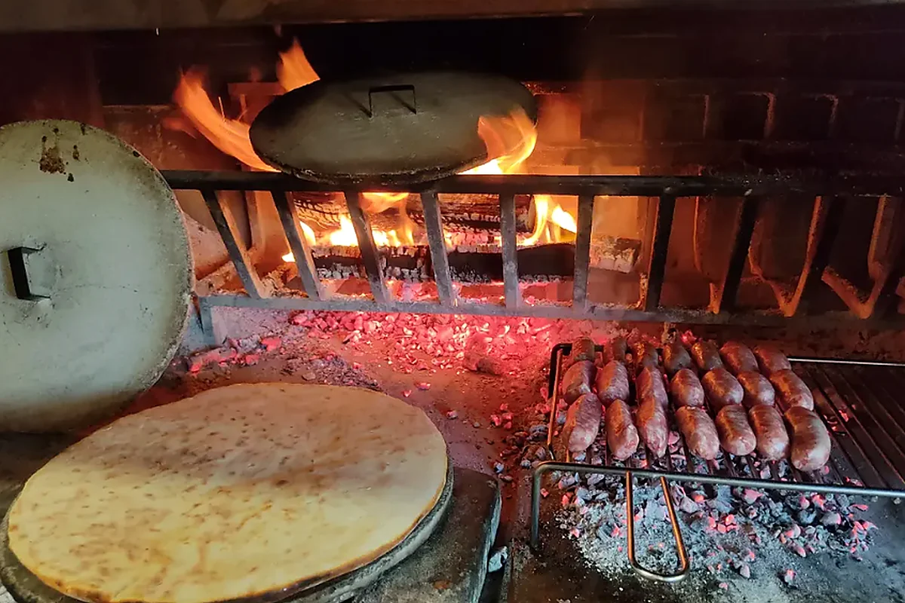
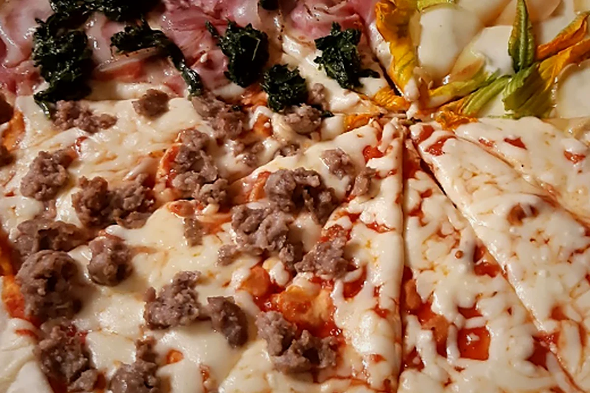
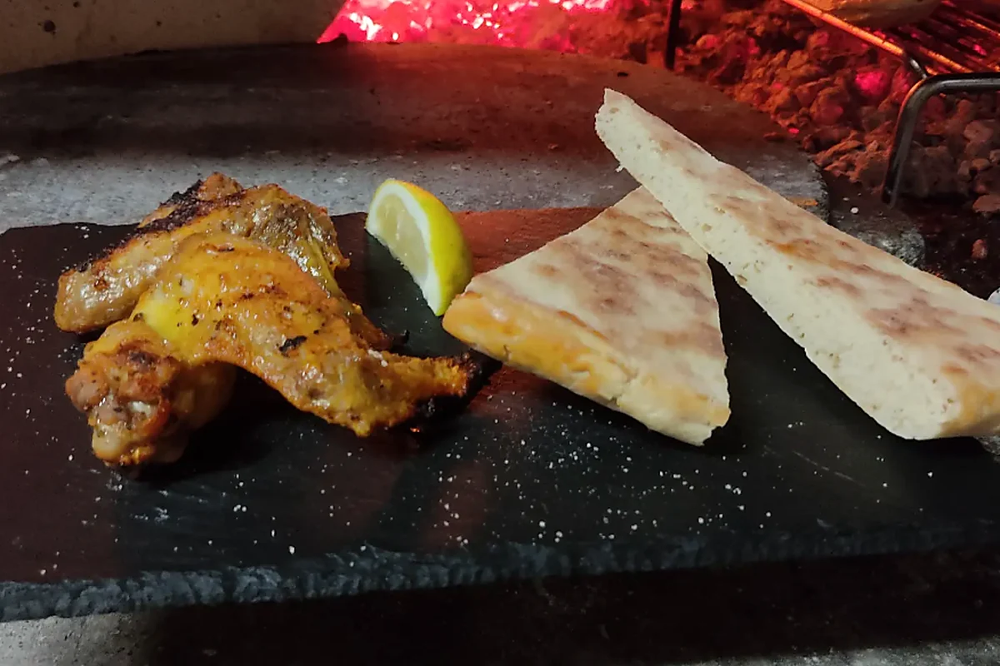
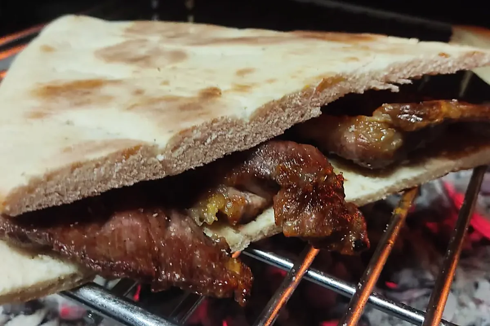
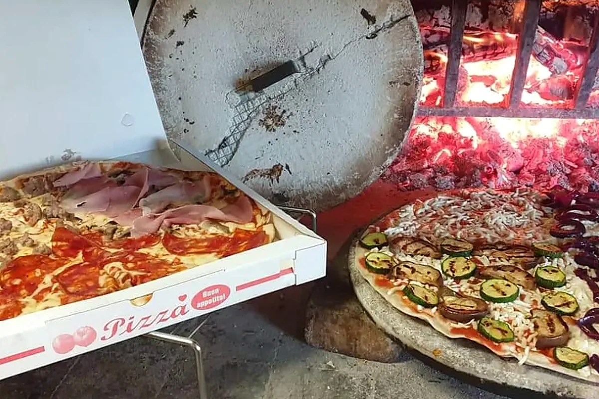
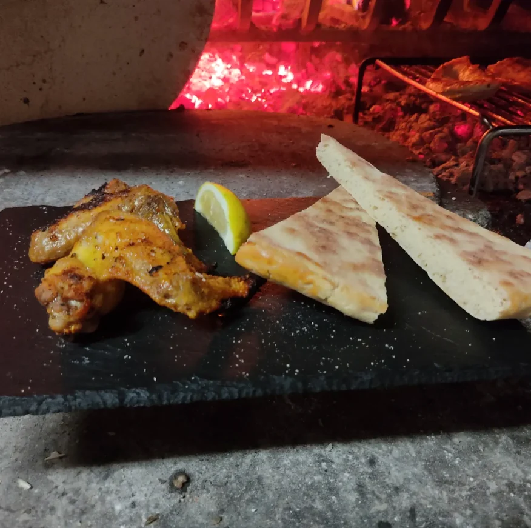
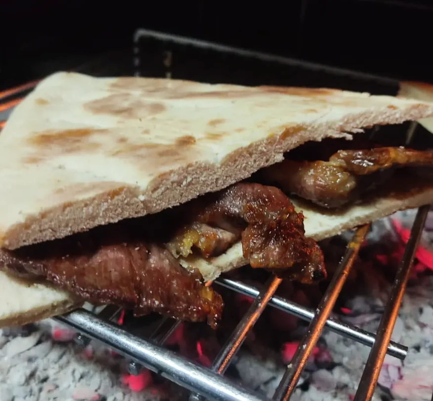
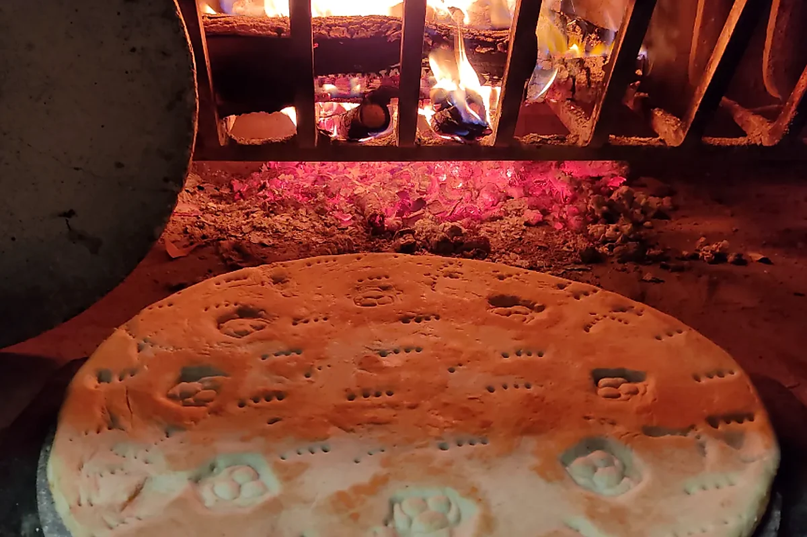

Padule di Gubbio · Umbria
Sapori veri,
intorno al fuoco.
La vera Crescia di Gubbio, la nostra Panarella e la carne alla brace. Una cucina semplice e genuina, preparata come una volta.

Una creazione de L'Focolare
Panarella
Una “pizza” sui generis.
Non potrete inoltre lasciarvi sfuggire la nostra creazione: un'esplosione di sapori che si imprimono nella mente. Una “pizza” sui generis, nata dall'incontro tra il testo e un impasto della pizza altamente digeribile.
Scopri prezzi e varianti →Dalla fiamma alla tavola
Brace viva,
sapori autentici.
Carne cotta davanti al fuoco e crescia appena scaldata: due gesti semplici che raccontano la cucina de L'Focolare.
Scopri la carne alla brace →

Dal nostro focolare
Il fuoco è parte
della nostra cucina.
Il panaro, la brace e la Panarella: immagini vere del lavoro quotidiano de L'Focolare.



Le nostre origini
Tradizione eugubina,
fiamma viva.
L'Focolare nasce l'11 luglio 2015 con l'intento di ritornare alle vecchie origini e riscoprire i sapori autentici.
Da noi potrai trovare la vera Crescia di Gubbio, una preparazione legata alla tradizione contadina e alla cottura sul panaro. Affonda le sue radici nella storia del territorio eugubino, la cui antichissima cultura alimentare trova testimonianza anche nelle celebri Tavole Eugubine.
La nostra crescia è fatta come da tradizione, con farine biologiche macinate a pietra, cotta su panari di refrattario riscaldati dalla fiamma viva del nostro focolare e farcita con diversi ingredienti.

Tradizione eugubina
La crescia,
come una volta.
Farine biologiche macinate a pietra, cottura sul panaro e farcitura al momento: un sapore autentico che sa di casa.
Vieni a trovarci
Il tuo tavolo
ti aspetta.
Siamo aperti da mercoledì a domenica per cena. Per disponibilità e prenotazioni chiamaci o scrivici su WhatsApp.
06024 Gubbio (PG)
- Mercoledì–Domenica
- 17:00–23:00
- Lunedì e Martedì
- Chiuso